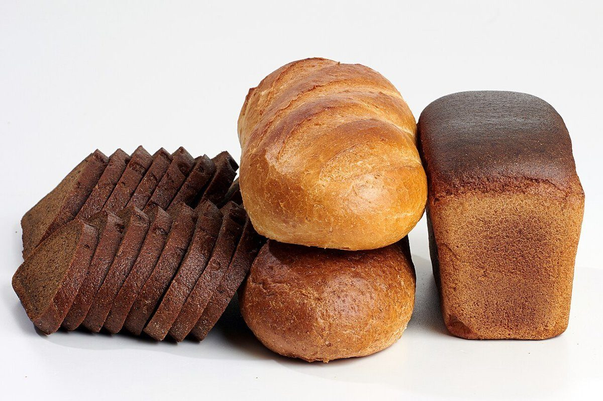

てごねパン グラシアス
Gracias

大分県佐伯市鶴岡西町にあるベーカリー「てごねパングラシアス」のご案内ページです。営業時間やメニューなどの詳しいことは準備中。まずはInstagramをのぞいてみてください。
制作側の連想
「ありがとう」の札を六枚
制作側は屋号の響きから、パン生地と「ありがとう」の言葉を連想し、このサイトを世界のありがとうを書いた札の束に見立てました。五つのページは、五つの言葉の札になっています。制作側の連想で、お店の理念・由来とは無関係です。
六つのありがとう
札をめくる。
言葉と写真に関係はありません。写真は佐伯市やお店のものではなく、国外または撮影地不明のフリー素材です。
札 01
Gracias
スペイン語

国外のイメージ(米国) 札 02
Merci
フランス語

国外のイメージ(スウェーデン) 札 03
Danke
ドイツ語

国外のイメージ(英国) 札 04
Grazie
イタリア語

国外のイメージ(スペイン) 札 05
Obrigado
ポルトガル語

国外のイメージ(ロシア) 札 06
Thank you
英語

国外のイメージ(米国)
ご案内
お店のこと(確認できたものだけ)
| 所在地 | 〒876-0047 大分県佐伯市鶴岡西町1丁目192-2 |
|---|---|
| 電話 | 0972-48-9189 |
| 営業時間 | 準備中 |
| 定休日 | 準備中 |
| ご予約 | 準備中 |
| 駐車場 | 準備中 |
| SNS | Instagram @yumi_gracias |